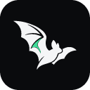
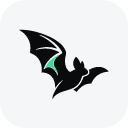

Color / light surface


Color / dark surface


Monochrome / black

Monochrome / white

A distinct silhouette for reflected signals. The selected banking pose, lowercase wordmark, and single green inner wing connect rflectr to the Legion family.
The 16px and 24px files are evaluation exports. The full bat reads most clearly at 32px and above; native tray and menu-bar testing remains part of app integration.

128px
Light / 128pxHorizontal and stacked logos, standalone bat, and wordmark. Color and monochrome. Native and square canvases. True vector SVGs and transparent PNGs, plus application and template icons.